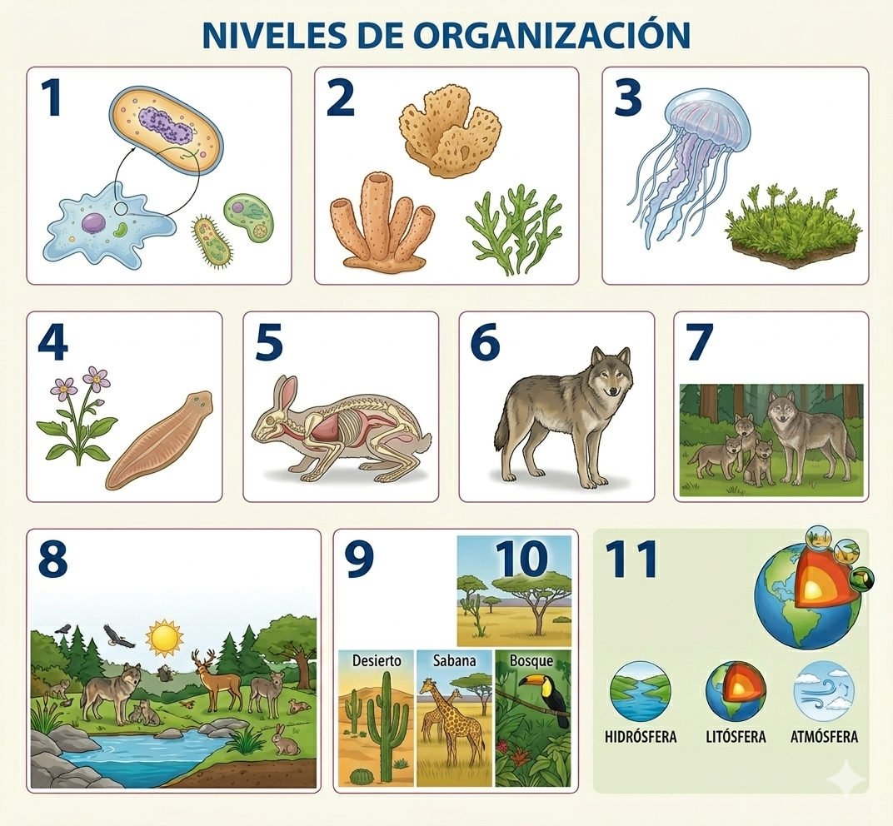

Así como la casa, los seres vivos poseen una estructura interna organizada desde los componentes más pequeños y sencillos hasta los más grandes y complejos donde cada nivel cumpla funciones específicas para mantener la vida y el equilibrio de los organismos.
INFOGRAFIA EN ORDEN
Infografía de los Niveles de Organización.

Secuencias de los Niveles de Organización de los Organismos desde el mas fácil hasta el mas complejo.(CC BY-SA)
Organismos unicelulares: Seres vivos formados por una sola célula aislada (eucariota o procariota), como las bacterias y protozoarios.
Pluricelulares sin tejidos: Organismos de varias células que no forman tejidos verdaderos, como las esponjas y hongos.
Pluricelulares con tejidos: Poseen tejidos diferenciados, pero carecen de órganos, como las medusas y los musgos.
Pluricelulares con órganos: Tienen órganos pero no aparatos complejos, como los helechos y ciertos gusanos.
Pluricelulares con aparatos y sistemas: Organismos complejos con sistemas de órganos, como la mayoría de los invertebrados y todos los vertebrados.
Individuos: Cualquier organismo vivo que no se reproduce con individuos de otras especies.
Población: Conjunto de individuos de la misma especie que comparten una misma zona geográfica.
Comunidad: Conjunto de poblaciones de varias especies (animales y vegetales) que interactúan en un mismo hábitat.
Ecosistema: Comunidad biótica integrada con su entorno físico, donde hay intercambio de energía y reciclaje de nutrientes.
Bioma: Unidad regional que agrupa ecosistemas con clima, factores abióticos y vegetación similares (ej. desierto, sabana).
Biósfera: Parte del planeta Tierra donde existe la vida. Consta de tres subdivisiones: hidrósfera, litósfera y atmósfera.
EJEMPLO
Ejemplo de los Niveles de los Organismos.
Ejemplo de los niveles tratados en la definición de las imágenes.(CC BY-SA)